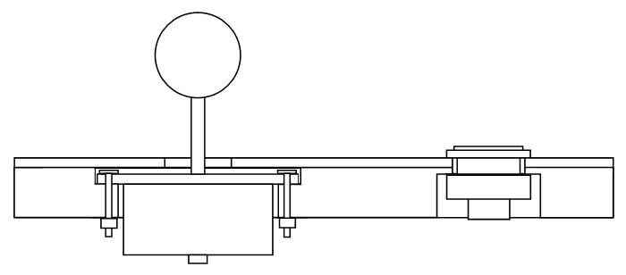
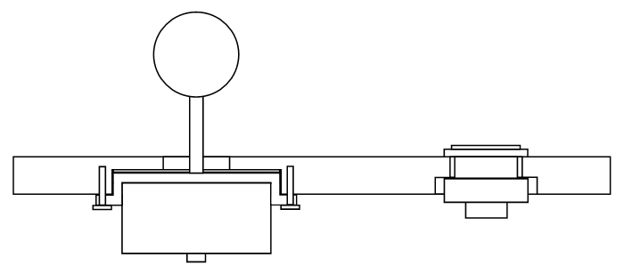

Panel Mounting and Layering
This section centers on the insides of the panel with the installation of devices in mind.
The most complex part in putting together a custom joystick controller can be determining and implementing the mounting of the joystick. You have to figure the best method for securing that mounting plate somewhere under that top piece of the control panel.
The layout on the panel does not really affect the design-type of the layering and mounting in the panel, which also does not really affect the design-type of the custom controller box. They are only related in that the layout of the buttons, comfortable placement of the hands, and obstructions or contributions of the controller box will determine the dimensions of the control panel, which will determine the dimensions of the box.
Panel Guideline Measurements
Below are standard measurements for installing various devices. You can stick to these, or tweak them a bit depending on the exact measurements of the buttons (as shown in their charts in the models subsections), or the player's preference in joystick depth.
Sanwa
- Joystick mounting height: 23mm-24mm between the bottom of the ball top and the top of the control panel (reference: Paik)
- Joystick top panel hole: 24mm diameter circle (plus or minus a few millimeters will work too)
- Standard button hole: 30mm diameter circle
- Small button hole: 24mm diameter circle
- Snap-in button depth (standard and small): 2mm-4mm panel thickness
- Screw-in button depth: 0mm-8mm panel thickness
- Screw-in standard button nut diameter: 36mm
- Screw-in small button nut diameter: 29.5mm
Seimitsu
- Joystick mounting height: 23mm-24mm between the bottom of the ball top and the top of the control panel (reference: Paik)
- Joystick top panel hole: 24mm diameter circle (plus or minus a few millimeters will work too)
- Standard button hole: 30mm diameter circle
- Small button hole: 24mm diameter circle
- Snap-in button depth (standard and small): 1.5mm-3mm panel thickness
- Screw-in button depth: 0mm-8mm panel thickness
- Screw-in standard button nut diameter: 35mm
- Screw-in small button nut diameter: 28mm
Happ/IL
- Joystick mounting height: 1/3”-2/3” between the top of the mounting plate and the top of the control panel
- Joystick top panel hole: 1-1/8” diameter circle
- Standard button hole: 1-1/8” diameter circle
- Small button hole: 15/16” diameter circle
- Standard button depth: 0”-1-1/8” panel thickness
- Small button depth: 0"-2/5" panel thickness
- Screw-in standard button nut diameter: 1-3/8"
Because the mounting depth for both Sanwa and Seimitsu joysticks is 23mm-24mm, the smallest thickness a controller can be made when sticking to these specifications is determined by the length of the joystick's shaft. Different models of joysticks made by Sanwa and Seimitsu have different distances between the top of the mounting plate and the bottom of the ball top, ranging from about 26mm to 36mm. This means some joysticks should be installed much closer to the surface than others.
But keep in mind the standard depth of the joystick is only a suggestion. The main goals are to place the joystick at a height suited to the play-style of the player, and to have the joystick body hidden securely under a smooth surface. Many players like to rest the side of their palm on the panel while playing the joystick at a certain relative height. If you feel like you need a more detailed analysis of mounting depth, get the joystick to be used and feel for yourself how deep it should be placed.
Image: Various Sanwa and Seimitsu mounting plates
And the height of the joystick can actually be adjusted after the panel is made. Using washers (which are each about 1mm thick) or nuts or other spacers (like blocks or a single shaped block of wood) along the bolts and between the mounting plate and the control panel can adjust the height of the joystick. In designing a control panel, you may want to set things to accommodate bulkier models and use washers to install less bulky models; doing this may make the joystick a bit less sturdy though.
Note that as screw-in buttons get more toward the extreme thicknesses of installment, they are less secure. Also note that standard mounting nuts can be exchanged between Sanwa and Seimitsu buttons, but small mounting nuts cannot. You may want to order some extra standard Seimitsu mounting nuts (which are inexpensive and come in clear) to make the buttons fit well.
Another thing about mounting is the placement of the bolts or screws in the mounting plate. For many of the Sanwa and Seimitsu mounting plates, the placement of the bolts in a dimension of 85mm by 40mm or 80mm by 40mm will work. So if there is potential for changing the model of joystick in your panel at some point, you may want to install the bolts with approximately those dimensions.
Mounting Types
Bottom-Mounting
Bottom-mounting refers to attaching the joystick to a panel above the mounting plate (it is mounted to the bottom of a panel). When routing to make space for the joystick, routing is done in the bottom of the base panel.
Top-Mounting
Top-mounting refers to attaching the joystick to a panel below the mounting plate (it is mounted to the top of a panel). When routing to make space for the joystick, routing is done in the top of the base panel.
Mounting Standards
Joysticks designed to install in a thick panel like Happ joysticks are usually fine for bottom-mounting. Joysticks produced by Sanwa and Seimitsu are designed not to be far below the panel and are less viable for bottom-mounting (excluding metal panels). Top-mounting is usually recommended for sturdiness in Sanwa and Seimitsu joysticks.
S-Plate
Image: Joysticks with S-plates: Sanwa JLF-TP-8S; Seimitsu LS-32; Seimitsu LS-40-01
Most mounting plates are flat and not contoured. The exception is the S-plate which has curves for lower or higher placement of the mounting screws or bolts. Currently, the only models that have available S-plates are the JLF, the LS-32, and the LS-40.
This can help in a couple different ways. It can make bottom-mounting in a wood panel more viable as the joystick can be installed in a thicker panel. And it can make certain methods of top-mounting better with the heads of the bolts not getting in the way on the top of the mounting plate. This can give more clearance for a top layer, and the surface of the mounting plate can get more flush with the top layer. Also, in some circumstances, the S-plate is turned over so the joystick can be installed at a distance from a thin panel; this is done with the JLF on arcade panels. Plus some arcade mounting brackets are suited to S-plates.
Layering
Layering of multiple panels for the control panel is a technique used to make stronger top-mounting possible, add smoothness, and/or decorate. With many mounting plates set only 1/3" or 1/4" (8mm or 6mm) under the top of the panel, multiple layers are often required to make a strong and durable control panel out of wood.
To achieve a flat playing surface, more-engineered materials should usually be used. For natural wood, the thinner the cut, the more likely warping occurs. In most woods, warping starts becoming a problem once the cut gets below about half an inch (12mm). In making a control panel, materials like acrylic glass (most recognized in plexiglas), particle board (MDF is a good example), and metal are best for a flat, well-layering surface. If you choose to use a natural cut of wood in the control panel, make sure it is fairly thick and not warped, and perhaps use a powerful planer on it.
Mounting and Layering Designs
The way you choose to put your control panel together will likely be determined most by your availability of a few certain tools: the jigsaw (or rotary saw) or the router (or laminate trimmer). A router or jigsaw will allow you to place the mounting plate between multiple panel layers, the router being more capable of doing so.
Some goals in making a quality panel include:
- The surface should be as clear and smooth as possible, and avoid screws or bolts protruding on the surface, especially around the joystick.
- The surface should not flex or break and use strong and thick materials.
- The surface should be flat with materials well-made from the start, especially if they are being layered with other panels; multiple layers that do not lay flat on each other make for a poor panel.
- The devices should be well-planted in strong and precisely cut materials using strong fasteners.
Also keep in mind that more layers can be added to the bottom of any of these designs in order to give more strength, decorate the insides, or create new design possibilities. Plus note that different fasteners and fastening techiques than the ones shown in the images can be used.
Mounting Without Special Tools
Image: Bottom-mounted, single solid control panel
The most simple, but flimsy, way to mount a joystick is bottom-mounting it flat under a solid panel. If this method is used, the material for the panel needs to be very strong or there will likely be some flexing or breaking. Plus bolt heads may be on the surface around the joystick. Some arcade panels use this with bolts soldered or welded to the bottom; you too can use this technique with a metal panel.
Image: Bottom-mounted, double solid control panel
Flat bottom-mounting using two panels further compromises the structure. It makes the surface smooth, but sacrifices even more strength in doing so. The material used has to be very strong. Arcade control panels made of metal often use this with acrylic glass.
Image: Top-mounted over blocks single control panel
This is top-mounting the plate onto some pieces not attached directly to the control panel. Some precision will be necessary in making the heights work together. You may need to carve lightly a few grooves in the panel where the screws protrude, or warp or grind the mounting plate so the screw heads are flush with the surface of the plate.
Mounting With a Jigsaw or Rotary Saw (or Router)
Having a saw that can cut holes can move your design a step above others, but not usually as great as with a router. In addition to these saws, perhaps a pointed hand saw or some other tools can be used. In making an area for the nuts on buttons to fit, some simple extra cutting or a larger hole bit may be used.
Image: Bottom-mounted, sawed support control panel
This design is the same as the bottom, flatly mounted design, but an addition panel with sawed holes that does not have any devices installed is there to support the thin top panel.
Image: Top-mounted, sawed triple control panel
The joystick is mounted on top of a thicker panel with a hole to fit the bulk of the joystick and another for the buttons. A thinner panel with a larger hole to fit around the mounting plate is there to put a buffer between the plate and the top panel. It is critical though that the panels are well-made and solidly flat so they fit well together. This design can make switching-out joysticks easier since buttons may not have to be removed first.
Image: Bottom-mounted, S-plate, sawed double control panel
With the S-plate, a hole is made in a panel thick enough to clear the protruding area of the plate. The top panel then fits over this leaving a smooth surface.
Image: Top-mounted, S-plate, sawed triple control panel
Top-mounting with an S-plate can take the heads of the bolts out of the way and make the top of the mounting plate more flush with the top panel. Note that the buttons can usually secure in the two top layers unlike the image shows.
Mounting With a Router or Laminate Trimmer
More complex designs will require more complex tools like a router or laminate trimmer, or perhaps a drill press with a forstner bit. This style of panel building is most popular among high-quality custom joystick controller making.
To give clearance for buttons to fit in the panel, grooves are made where the screw caps attach. You can do this with simple routing, but it will look best using a rabbeting or similar bit or maybe a bushing piece and/or template, or even a drill press with a forstner bit.
Image: Bottom-mounted, routed single control panel
This common design puts a cove in the bottom of the panel to house the mounting plate under the panel at the proper depth. Very simple design, but it leaves bolts around the joystick.

Image: Top-mounted, routed double control panel
The method most commonly used in quality joystick building involves putting a top cove in the bottom panel deep enough for the plate and heads of the bolts, and a smaller hole through the rest of it for the bulk of the joystick. Another cove is made in the bottom of the bottom panel to give clearance for securing the buttons. This design gives a smooth, secure, sturdy control panel.

Image: Bottom-mounted, S-plate, routed single control panel
This design is about the same as the single, routed panel, but the plate can be installed securely without having bolts show around the joystick.
Image: Top-mounted, S-plate, routed double control panel
Again, top-mounting with an S-plate can take the heads of the bolts out of the way and make the top of the mounting plate more flush with the top panel.
Image: Top-mounted, routed triple control panel
Similar to the sawed, triple design, more precision and sturdiness can be used with a router. A cove for the plate can be put in the bottom and/or middle layer so the joystick can be set at more precise and varying depths. Space for the heads on the bolts can be made with just a few craters in the middle layer, making the panel more sturdy. And switching-out joysticks can be easier. Note too that instead of three panels, two thick panels can easily be used.
Mounting Plate Modification
In some circumstances it can be difficult to fit a given mounting plate in the proper position. The most common problem is having the bolt heads get in the way of putting plate near the surface of the control panel. Some models that have this problem including the LS-32 and LS-40, but they have S-plates to help with this problem. The LS-33 is a model for which this is very difficult.
One technique to counter this is to drill holes using a countersink for fitting other models of joysticks into a different mounting plate. This makes different models of joysticks use different mounting plates. I tend not to recommend this as getting these holes exact can be fairly difficult.
Image: Mounting plate drilled to allow sinking bolts
A technique similar to this is using a countersink on the mounting holes of the mounting plate so that sinking bolt heads can fit into the plate itself and the plate can be near the surface without the bolt heads getting in the way. You could also bore completely new mounting holes in a given mounting plate. I highly recommond this technique, especially for mounting the LS-33, but you will probably need a drill press for this.
Yet another technique is soldering or welding the bolts to the base of the mounting plate, using large thread holes through which the bolts can slide in the panel, and securing the base using washers and bolts. However, note that I have tried soldering mounting plates, using some different fluxes and solder, without success.
Device Mounting
Before mounting, measurements and planning should be done to make sure the devices are centered and solid at the proper heights and positions.
The joystick will generally be mounted to the base control panel. Establishing proper joystick mounting depth depends on the length of the stick above the mounting plate (which depends on the joystick model), mounting type (top or bottom), mounting plate thickness (in top-mounting), panel thickness(es), and the length of the stick wanted above the control panel (which is a preference of the user).
For bottom-mounting in the base panel, the equation resembles:
Depth in Base Panel = (Base Panel Thickness + Top Panel Thicknesses) - (Stick to Plate Depth - Desired Stick Depth)
For top-mounting in the base panel, the equation resembles:
Depth in Base Panel = (Stick to Plate Depth - Desired Stick Depth) + Mounting Plate Thickness - Top Panel Thicknesses
With a negative result for bottom-mounting (which is likely in metal panels), spacers like washers need to be added (the spacer depth will equal that negative number) or a thicker panel is needed. For top-mounting, the panel needs to be thick enough to hold the joystick securely, ie the panel needs to be thicker than the resulting depth. It is often safer to have excess depth in the base panel because spacers can always be added to adjust the height of the joystick.
In drilling the holes for the panel, I recommend using a printout taped to the panel as a guide. Going through all the panels secured together at once when possible is a good idea; you can also use the base panel as a template for drilling top panels, or you can make a layout-drilling template for all layers. When not using a thick template, start with small pilot holes down the center of each button and the joystick location. If you are using a handheld drill, make small exact divots using something like a hammer and nail to guide in making these pilot holes; place a square piece of scrap wood against the panel and drill bit to help make the hole more perpendicular.
Added room may be necessary to fit the button securers. I recommend at least 2mm less than max clearance for screw-in buttons. Room for the base of the buttons can be done either using a drill press with a larger forstner bit, or it can be done with routing (or it can be done with an added panel with larger holes). If you are securing snap-in buttons to the top panel, all that needs to be added is filed grooves to fit the tabs in the base panel. Use the right hole bit for the right material and hole sizes to finish the holes. Make sure the panel is supported on a panel of scrap wood when making these large holes; I have actually blown through a panel because I forgot to support it.
How well centered and aligned the joystick will result depends mostly on the holes used to secure the mounting plate. Do not accidently make these holes in top panels. I recommend removing the mounting plate from the joystick and taping it to the panel centered and squared as possible. Drill the bolt holes through the mounting plate holes as precisely as you can. When to make these holes depends on whether or not you are using a drill press. With a drill press, make these holes through the base panel whenever you feel you can center and square the mounting plate best. With a handheld drill, for accuracy, you may want to wait until after routing (if routing is done) so you can make the entry holes nearest the installation point as possible.
To fit the body of the joystick in the panel, routing or drilling or sawing may be needed. Making a template to do this for the plate at the needed depth, and then another template for the rest of the body to go through the whole panel, can make this process easier and produce better results. Otherwise, draw out the plate dimensions on the panel and route for it at the proper depth; then draw out the body for the joystick on the other side of the panel, and cut all the way through for it.
Arcade Panel
Often players order and install an actual arcade panel into the top of a box for a controller. Because they are designed for cabinets, they are usually very wide and require a large box that takes a lot of space. However, with some strong equipment, parts of the panel can be cut away. This is a very direct way to get that arcade experience. But often arcade panels do not have much area for palm support.